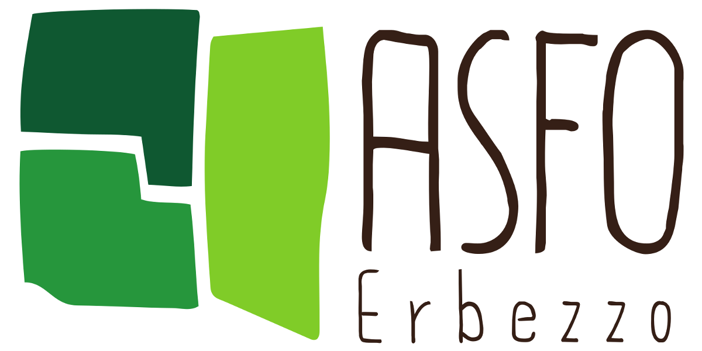
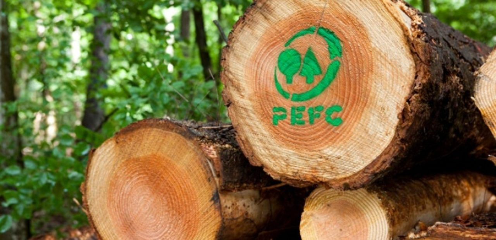

Applicazioni di paesaggio a Stregna
Dall'associazione fondiaria, al recupero dei terreni incolti e dei terrazzamenti 
dott. Luca Postregna, sindaco di Stregna
www.asfoerbezzo.eu - info@asfoerbezzo.eu
Giornata regionale dell'economia solidale
@Tolmezzo, località Prà Castello - Udine, 22 giugno 2019

Di cosa parleremo?

- la scheda d'ambito delle Valli del Natisone
- le norme regionali che affrontano l'abbandono
- associazione fondiaria: cos'è, cosa fa e cosa farà?
Qual'è la principale tematica paesaggistica emersa nelle Valli del Natisone?
ABBANDONO
edifici (buone pratica è l'Albergo Diffuso)
terreni incolti (PPR: rete ecologica)
rete escursionistica (PPR: rete mobilità lenta)
paesaggio terrazzato (PPR: rete beni culturali)
Le Valli del Natisone

- 9 comuni
- superficie: 240kmq
- altezza: 90m - 1641m s.l.m.
- abitanti: ~24000 nel 1920, ~8000 nel 2015
distribuzione dei centri abitati
| % | alt. (m) |
|---|---|
| 40 | -300 |
| 20 | 300-500 |
| 25 | 500-700 |
| 10 | +700 |
- 0.6 centri abitati per Kmq
la superficie agricola

- agraria: 10-15%
- forestale: 70-80%
catasto nel comune di Stregna
- 1904ha di superficie
- 0.24ha superficie media per particella
- 99% è proprietà privata
lo studio nella fraz. di Cernetig
- superficie: 36ha
- n. particelle: 330
- superficie media: 0.11ha

proprietari:
- 225 totale
- 19% residenti
- 81% non residenti
particelle:
- 77% con almeno 1 proprietario non residente
- 52% senza proprietari residenti

le iniziative sul frazionamento fondiario, multi-proprietà e abbandono
lr 16/2006
razionalizzazione fondiaria + PIPA
lr 10/2010
recupero dei terreni incolti ed abbandonati
lr 9/2007 (mod. nel 2017)
associazioni fondiarie

LR 16/2006
razionalizzazione fondiaria + PIPA
Intervenire sul titolo di proprietà è un limite o una opportunità?
LR 10/2010
Interventi di promozione per la cura e conservazione finalizzata al risanamento e al recupero dei terreni incolti e/o abbandonati nei territori montani.
finalità LR 10/2010

- prevenzione incendi
- prevenzione animali nocivi (zecche, ecc.)
- stimolare imprenditoria agricola
- recupero del paesaggio e della biodiversità
tempi di attuazione della LR 10/2010

- 1-2 anni: intervento di recupero, contributo di superificie tra 3500-8000€/ha
- per almeno 5 anni: mantenimento a prato/pascolo, contributo 500€/ha/anno cumulabile con PSR
Interventi a Stregna e Oblizza:
Cos'è l'associazione fondiaria?
- associazione di volontariato senza fini di lucro
- acquisisce la gestione dei fondi agricoli dai soci
- non usucapisce la proprietà per statuto
- cede l'utilizzo dei fondi agli operatori agricoli con finalità di recupero dei terreni incolti ed abbandonati in particolare per finalità pascolive
Com'è arrivata l'associazione fondiaria a Stregna?

2012-2013
- movimento freeplanine - Poldini, Iussig, ...
- lr 10/2010 per il recupero dei terreni incolti ed abbandonati
2015
- marzo: conferenza introduttiva (Cavallero, Iussig, ...)
- maggio: atto costitutivo ed approvazione statuto (Coldiretti, Kmečka Zveza, ...)
- estate: problemi lr 10/2010 + moduli di adesione
- dall'autunno: ammissione nuovi soci...

soci fondatori, 19 maggio 2015
A che punto siamo nel 2019?
- 70+ soci
- 340+ particelle
- 50+ ha
- 5 contratti d'affitto a dicembre 2018
Tra ASFO e privati abbiamo avviato recuperi su 25 ettari di terreni incolti ed abbandonati
ASFO Erbezzo a Stregna

ASFO Erbezzo ad Oblizza

ASFO Erbezzo a Tribil Superiore

LR 9/2007 art. 86bis
associazioni fondiarie


Quali sono le prospettive?
- piani di gestione aree recuperate (c'è la lr 9/2007...)
- ampliare recupero dei terreni incolti
...ma anche

- gestione dei prati a sfalcio
- gestione selvicolturale
- progetti mirati (castanicoltura tradizionale, ...)
Viabilità forestale

PSR + LR 9/2007 art. 35
problemi con i fondi d'investimento PSR ed europei!
Certificazione forestale sostenibile
Piani di gestione forestale ...
aggiornamenti legislativi e nuove norme
intendiamo valorizzare la nascita e l'aggregazione delle associazioni fondiarie e promuovere una norma nazionale
manca ancora il regolamento regionale per i fondi correnti alle ASFO ...
Testo Unico in materia di foreste e filiere forestali 2018
Art.2 comma 1c) Finalità - promuovere e tutelare ... l'economia montana ... attraverso ... il recupero produttivo delle proprieta' fondiarie frammentate e dei terreni abbandonati, sostenendo lo sviluppo di forme di gestione associata delle proprieta' forestali pubbliche e private;Art. 12) Forme di sostituzione della gestione e di conferimento delle superfici forestali ...
Legambiente Bandiera verde 2017

Associazione Ambientalista Eugenio Rosmann Monfalcone, Concorso Populus Alba per le Pubbliche Amministrazioni 2017

Un consiglio per iniziare?

Grazie per l'attenzione - Interventi

dott. Luca Postregna, sindaco di Stregna
www.asfoerbezzo.eu - info@asfoerbezzo.eu
Giornata regionale dell'economia solidale
@Tolmezzo, località Prà Castello - Udine, 22 giugno 2019